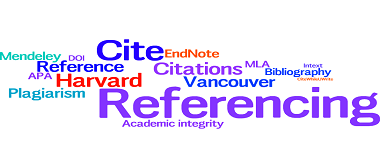

Inclusive language is language that does not belittle, exclude, stereotype or trivialise people on the basis of their race, gender or disability.
Inclusive language

Formal Writing

It is usually the case that in formal writing you avoid the use of personal pronouns. These include I, me, we, us and you. However there are instances in certain disciplines where your lecturer will invite you to use the first person. In reflective journal writing for example, using the first person is appropriate.
Reference list

This list is made up of all the publications you have referred to within your assignment, and these are listed in alphabetical order according to the author’s surname (or title if there is no author). This list appears on a separate page at the end of the assignment and has the heading References or Reference List in the centre of the page.